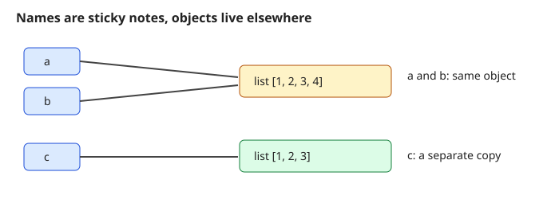

Imagine your manager gives you a 2 GB file of every order an online shop took this year and says, "Tell me the average order value for each city by tomorrow." You cannot do that by hand, and Excel will not even open the file. With Python you can do it in 20 lines. But before those 20 lines make sense, you must understand the ground floor: how you run Python, what a variable really is, and why a change in one place can silently change data in another place. This chapter builds that ground floor. By the end you will run code in two ways, know the seven basic types, predict what a copy does and does not copy, and avoid the bugs that trip up most beginners.
Running example for this chapter. We use one line from an online-shop orders file: A1042,3,480,true. It means: order A1042, 3 items, amount 480 rupees, paid true. Python reads it as plain text, and turning that text into useful numbers is our first real job.
All code in this document was run with Python 3.14 on a Mac. If your Python is older, small details (like the bytecode listing in Section 1.1) may look different. Everything else works on any Python 3.10 or newer.
How to use the code blocks. For each example, first cover the output with your hand and predict what will print. Then compare. Then read the explanation. Being wrong is useful: it shows exactly where your mental model needs repair.
python3.python3 in a terminal. Leave it with exit() or Ctrl+D..py. You run it with python3 file.py..py file that other code imports. A script and a module are the same kind of file. The only difference is how you use it.python3 -c "print('hi')" runs a string of code.Python does not turn your code directly into machine instructions the way C does. It works in three steps:
.pyc file inside the __pycache__ folder, so imports are faster next time. your code compile bytecode PVM executes
add.py -----> (automatic) --> LOAD, ADD, ... --> result
|
+--> __pycache__/add.cpython-314.pyc (cache)The standard Python from python.org is called CPython because it is written in C. There are others (PyPy, for example), but when people say "Python" they nearly always mean CPython.
Predict: Before you look, what do you think each line prints? Which lines print nothing?
I piped three lines into the REPL to show you what a session looks like. The >>> is the prompt.
printf '2+3\nx=10\nx*x\n"ab"*3\nimport math\nmath.sqrt(16)\n' | python3 -q -i>>> 5
>>> >>> 100
>>> 'ababab'
>>> >>> 4.0
>>> The lines x=10 and import math print nothing, because they are statements, not expressions. An expression has a value (2+3 is 5). A statement does something (x=10 stores a value). The REPL prints the value of every expression automatically. A script does not. In a script you must call print().
Save this as a.py:
import sys, dis
def add(a, b):
return a + b
dis.dis(add)
print(sys.version_info[:2] >= (3, 10))
print(__name__)Run python3 a.py. Real output:
2 RESUME 0
3 LOAD_FAST_BORROW_LOAD_FAST_BORROW 1 (a, b)
BINARY_OP 0 (+)
RETURN_VALUE
True
__main__Read it like this:
dis.dis shows the bytecode of the function add. Load a and b, add them, return the result. Exact names of instructions change between Python versions. That is normal.__name__ is a built-in variable. When you run a file directly, its value is "__main__". When another file imports it, the value is the module's name. We use this in Chapter 9 to write if __name__ == "__main__":.| Idea | Example | Where it appears in the job |
|---|---|---|
| REPL | python3, then len(open("r.csv").readlines()) | Checking a file before you write a pipeline |
| Script | python3 summarise.py results.csv | A nightly report job |
| Module | import utils | Shared helper code in a team repo |
| Bytecode cache | __pycache__/ | A folder you add to .gitignore |
REPL Script
---- ------
type -> result now write file -> run whole file
good for: trying ideas, good for: anything you want to
checking a function repeat, share, test, schedule
state lost when you exit state lost when script endspython3 -c is handy in shell pipelines and CI jobs for tiny checks..pyc and __pycache__ stops you from committing them by mistake. They belong in .gitignore.json.py, random.py or email.py. When you write import json, Python finds your file first and your program breaks in strange ways. Never use a standard library name for your own files.Check yourself
Answer: An expression has a value (2+3). A statement performs an action (x = 10). The REPL auto-prints expression values.
__name__ equal when you run python3 a.py?Answer: The string "__main__".
__pycache__ folders?Answer: To store compiled bytecode (.pyc files) so later imports start faster.
A variable is a name bound to an object. Assignment x = 10 means: create the object 10 (or reuse it), then bind the name x to it. Every object has a type. Python is dynamically typed: a name has no fixed type, but each object does. Python is also strongly typed: it will not silently mix "5" + 5.
The basic types:
| Type | Meaning | Example |
|---|---|---|
int | whole number, any size | 42, 10**30 |
float | decimal number (64-bit, IEEE 754) | 3.14 |
complex | real + imaginary part | 2+3j |
bool | True or False (a subtype of int) | True |
str | text (Unicode characters) | "hello" |
bytes | raw bytes (numbers 0 to 255) | b"hi" |
NoneType | the single value None, meaning "nothing here" | None |
Predict: Will 0.1 + 0.2 == 0.3 print True? What is -7 // 2?
print(type(42), type(3.14), type(2+3j), type(True), type("hi"), type(b"hi"), type(None))
print(7/2, 7//2, 7%2, -7//2, -7%2, 2**10, divmod(17,5))
print(0.1+0.2, 0.1+0.2==0.3)
import math
print(math.isclose(0.1+0.2,0.3))
from decimal import Decimal
print(Decimal("0.1")+Decimal("0.2"))
print(10**30, (2+3j)*(1-1j), (2+3j).real, (2+3j).imag, abs(3+4j))Real output:
<class 'int'> <class 'float'> <class 'complex'> <class 'bool'> <class 'str'> <class 'bytes'> <class 'NoneType'>
3.5 3 1 -4 1 1024 (3, 2)
0.30000000000000004 False
True
0.3
1000000000000000000000000000000 (5+1j) 2.0 3.0 5.0What to learn from this:
/ always gives a float. // is floor division (rounds down, so -7//2 is -4, not -3). % is the remainder and always has the sign of the divisor, so -7 % 2 is 1.10**30 is exact.0.1 has no exact binary form, just like 1/3 has no exact decimal form. So 0.1 + 0.2 is 0.30000000000000004. Never compare floats with ==. Use math.isclose. For money, use decimal.Decimal (made from strings) or integer paise.(2+3j)*(1-1j) = 2 - 2j + 3j - 3j² = 2 + j + 3 = 5+1j. Check by hand: it matches.print(True+True, isinstance(True,int), bool(0), bool(""), bool([]), bool("0"), bool(None))
print(int("42")+1, float("2.5"), str(99)+"!", int(3.9), round(2.5), round(3.5), round(2.675,2))Real output:
2 True False False False True False
43 2.5 99! 3 2 4 2.67True + True is 2 because bool is a kind of int.if, these count as false: 0, 0.0, "", [], {}, (), set(), None, False. Everything else is true. The string "0" is true because it is not empty.int(3.9) cuts off the decimals (gives 3). It does not round.round(2.5) gives 2 and round(3.5) gives 4. Python rounds exact halves to the nearest even number ("banker's rounding"). And round(2.675, 2) gives 2.67, not 2.68, because the float 2.675 is really a tiny bit less than 2.675.s = "héllo ₹"
print(len(s), len(s.encode("utf-8")), s.encode("utf-8"))
print(b"abc"[0], bytes([72,105]), b"Hi".decode())Real output:
7 10 b'h\xc3\xa9llo \xe2\x82\xb9'
97 b'Hi' Hié takes 2 bytes. ₹ takes 3 bytes. The rest take 1 each: 5 + 2 + 3 = 10.str is text. bytes is raw data. .encode() turns text into bytes. .decode() turns bytes into text. You must name the encoding; always use "utf-8".bytes gives an integer (97 is the code of a).| Type | Example in our running row A1042,3,480,true | Where it appears in the job |
|---|---|---|
str | "A1042", and also "480" before conversion | Raw CSV and log fields |
int | 3, 480 after int("480") | Item counts, amounts, minutes |
float | 411.25 (an average) | Means, percentages, model scores |
bool | ok == "true" gives True | Flags such as is_error |
bytes | b"\xff" | Files, network data, hashes |
None | a missing delivery date | Missing values and "no result" |
Predict: amount came from split. What is its type? What does amount + amount give?
row = "A1042,3,480,true"
order_id, items, amount, paid = row.split(",")
print(type(amount), amount + amount)
amount_rs = int(amount)
print(amount_rs + 20, paid == "true")
try:
print("amount: " + amount_rs)
except TypeError as e:
print("TypeError:", e)
print("amount: " + str(amount_rs))
try:
print(undefined_name)
except NameError as e:
print("NameError:", e)
try:
b"\xff".decode("utf-8")
except UnicodeDecodeError as e:
print("UnicodeDecodeError:", e)Real output:
<class 'str'> 480480
500 True
TypeError: can only concatenate str (not "int") to str
amount: 480
NameError: name 'undefined_name' is not defined
UnicodeDecodeError: 'utf-8' codec can't decode byte 0xff in position 0: invalid start byteLine by line:
split(",") cuts the text at each comma and returns a list of four strings. We unpack them into four names. Note that amount is the text "480", so + joins text and gives 480480. This is the single most common beginner surprise with CSV data.int(amount) makes the number 480. Now + 20 is arithmetic: 500. Python has no true keyword, so we compare the text with "true" to get a real bool.str and int with + is an error: Python is strongly typed and refuses to guess. Fix: convert with str(...) (or use an f-string, Chapter 3).NameError means you used a name that was never assigned. Read the name in the message: usually a typo.UnicodeDecodeError means the bytes are not valid in the encoding you asked for. Byte 0xff can never start a UTF-8 character.name object (in memory)
---- ------------------
x ------> [ int: 10 ]
y ------> [ str: "hi" ]
z ------> [ None ]
x = "now text" moves the sticky note x to a new object.
The old int 10 is untouched (and freed if nothing else points to it).math.isclose or pytest.approx.None is how Python represents missing values. Pandas uses NaN for the same idea in numeric columns (see the Data Analyst document).UnicodeDecodeError) are one of the most common failures when reading CSV files from different systems.int() and float() before computing totals and averages.Decimal).str, encoding).bytes).None).complex).== to compare floats, and using float for money. Another very common one: reading a file without saying encoding="utf-8", which works on your laptop and fails on the server.Check yourself
-9 // 4 and -9 % 4?Answer: -3 and 3. Floor of -2.25 is -3, and -9 - (4 * -3) = 3.
bool("False") equal to True?Answer: It is a non-empty string, and every non-empty string is truthy.
"₹" in UTF-8?Answer: 3 bytes.
list, dict, set, bytearray, and most classes you write.int, float, complex, bool, str, bytes, tuple, frozenset, None. Doing n += 1 on an int creates a new int and moves the name.a is b tests identity. id(a) gives a number for that identity.a == b tests equality (it calls the object's __eq__).is only for singletons: x is None, x is True. Use == for everything else.gc) also finds and frees groups of objects that point to each other (cycles) when no outside name points to them.copy.copy, list[:], list.copy()) copies the outer container but shares the inner objects. Deep copy (copy.deepcopy) copies everything inside, recursively.Predict: After b.append(4), does a change?
import copy
a=[1,2,3]; b=a; c=a[:]
b.append(4)
print(a,b,c, a is b, a is c, a==c, id(a)==id(b))Real output:
[1, 2, 3, 4] [1, 2, 3, 4] [1, 2, 3] True False False Trueb = a does not copy. It puts a second note on the same list. So b.append(4) changes what a sees.c = a[:] is a new list made earlier, so it still holds [1, 2, 3]. After the append, a == c is False because the values differ now, and a is c is False because they are different objects.Predict: A tuple is immutable. Can its inner list still grow?
import copy
nested=[[1,2],[3,4]]
sh=copy.copy(nested); dp=copy.deepcopy(nested)
nested[0].append(99)
print(sh, dp)
t=(1,[2,3]); t[1].append(9); print(t)
try:
t[0]=5
except TypeError as e: print("TypeError:",e)Real output:
[[1, 2, 99], [3, 4]] [[1, 2], [3, 4]]
(1, [2, 3, 9])
TypeError: 'tuple' object does not support item assignmentsh has its own outer list but shares the inner lists, so it saw the 99. The deep copy dp did not.(1, [2, 3, 9]).def f(lst): lst.append("x")
def g(n): n+=1; return n
L=[]; f(L); print(L); n=1; g(n); print(n)Real output:
['x']
1Python passes the reference (call by object reference, sometimes called "call by sharing"). Function f changes the same list the caller owns, so the caller sees ['x']. Function g cannot change the caller's n, because n += 1 makes a new int and re-points only the local name.
Predict: In [[0]*3]*2, if you set the first cell of row 0 to 1, how many rows change?
import sys, gc
grid=[[0]*3]*2; grid[0][0]=1; print(grid)
grid=[[0]*3 for _ in range(2)]; grid[0][0]=1; print(grid)
print(sys.getsizeof(0), sys.getsizeof([]), sys.getsizeof([1,2,3]), sys.getsizeof("a"), sys.getsizeof({}))
class Node:
def __init__(s): s.other=None
p=Node(); q=Node(); p.other=q; q.other=p
del p,q
print("collected:", gc.collect()>0)
import weakref
class K: pass
k=K(); r=weakref.ref(k); print(r() is k); del k; print(r())Real output:
[[1, 0, 0], [1, 0, 0]]
[[1, 0, 0], [0, 0, 0]]
28 56 88 42 64
collected: True
True
None[[0]*3]*2 repeats the same inner list twice. Changing one row changes both. The list comprehension builds two separate rows. This is a classic bug.sys.getsizeof shows the size of the object itself in bytes, not the objects it points to. An empty list is 56 bytes here and an int is 28 bytes. These numbers depend on Python version and platform. For a full size of a nested structure you have to add up inner objects yourself, or use tracemalloc (Chapter 11).p and q point to each other. After del p, q reference counts do not reach zero, so only the cycle collector can free them. gc.collect() returned a positive count, meaning it found and freed objects.weakref.ref) does not keep an object alive. After del k the object is gone and r() returns None.__slots__ is a way to reduce memory per instance. We cover it in Chapter 8.is surprises youa = 1000; b = 1000
print(a == b, a is b)
x = [1,2]; y = [1,2]
print(x == y, x is y)
v = None
print(v is None, v == None)Real output:
True True
True False
True Truea is b printed True here only because Python reused one constant object when compiling this small file. Inside a function call or from user input, two equal big ints are often different objects. The result of is on numbers and strings is an implementation detail. Never rely on it. Lists made separately are never the same object.

Read the diagram left to right. The blue boxes are names. The arrows go from a name to the object it points at. Names a and b have arrows to the same box, so a change through either name shows up through the other. Name c points to a different box that holds a copy. The text version below shows the same idea and the grid bug.
a = [1,2,3]
b = a a ----+
+--> [1,2,3]
b ----+
c = a[:] c ------> [1,2,3] (new object)
grid = [[0]*3]*2
grid --> [ row , row ] both slots point to ONE row
\ /
[0,0,0]df = df.copy()) or do not change them at all.SettingWithCopyWarning in pandas.b = a makes a copy. Also: using is instead of == to compare values. A good rule: if you write is and the right side is not None, True or False, stop and ask why..copy(), slicing, deepcopy) or when an operation builds a new object (like + on strings).Check yourself
a = [1,2]; b = a; b += [3], what is a?Answer: [1, 2, 3]. += on a list changes the list in place, and a and b are the same object.
t = (1, 2) followed by t[0] = 9 allowed?Answer: No. Tuples are immutable, so you get a TypeError.
copy.copy and copy.deepcopy?Answer: copy copies only the outer container and shares inner objects. deepcopy copies inner objects recursively.
average_order_value and know what it means without a comment. Unpacking is like handing out four parcels to four people in one move, instead of one by one._, and cannot start with a digit. Names are case sensitive. You cannot use keywords (if, class, for, ...).snake_case for variables and functions, PascalCase for classes, UPPER_CASE for constants.a, b = 1, 2. A starred name collects the rest: first, *rest = items.a, b = b, a, no temporary variable needed.1_250_000. Python ignores them.Predict: What do a and b hold after the swap? What is rest?
a, b = 1, 2
a, b = b, a
print(a, b)
amounts = [480, 360, 510, 295]
first, *rest = amounts
print(first, rest, sum(amounts)/len(amounts))
n = 0
n += 1; print(n)
a = [1,2]; b = a; b += [3]; print(a)
total_sales = 1_250_000
print(total_sales, f"{total_sales:,}")Real output:
2 1
480 [360, 510, 295] 411.25
1
[1, 2, 3]
1250000 1,250,000b, a is built first as the pair (2, 1), and only then assigned. That is why no temporary variable is needed.first gets the first amount. *rest collects everything else into a new list.n += 1 on an int makes a new int. b += [3] on a list changes the list in place, so a changes too. This is the one place where += behaves differently for mutable and immutable types.f"{total_sales:,}" is an f-string with a thousands separator. We study f-strings in Chapter 3.Problem 1.4.1 Using the four order amounts above (480, 360, 510, 295 rupees), find the mean and how much cheaper the cheapest order is than the dearest, in percent.
| Formula | mean = sum / count. saving % = (dearest − cheapest) / dearest × 100. |
|---|---|
| Plug in | sum = 480 + 360 + 510 + 295. count = 4. dearest = 510. cheapest = 295. |
| Compute | sum = 1645, so mean = 1645 / 4 = 411.25. saving = (510 − 295) / 510 × 100 = 215 / 510 × 100 = 42.157... |
| Answer | The mean is 411.25 rupees. The cheapest order is about 42.2% cheaper than the dearest. |
| Check | In code, sum(amounts)/len(amounts) printed 411.25 above. And 510 * (1 - 0.42157) is about 294.999, which rounds to 295, so the percentage is right. |
| Why it matters | In real work you compute many statistics like this from a list of numbers. The mean alone hides the spread, which is why later chapters and the Statistics document use percentiles. |
| Habit | Bad | Good |
|---|---|---|
| Name a number | x = 480 | amount_rs = 480 |
| Name a constant | limit = 2000 | FREE_DELIVERY_LIMIT = 2000 |
| Unpack a record | r[0], r[2] | order_id, items, amount, paid = row.split(",") |
order_id, items, amount, paid = "A1042,3,480,true".split(",")
"A1042,3,480,true" --split(",")--> ["A1042", "3", "480", "true"]
| | | |
order_id items amount paidThe split produces one list. Unpacking hands one list item to each name, in order. If the counts do not match you get ValueError: too many values to unpack or not enough values to unpack. That error is useful: it tells you a data row has the wrong number of columns.
Every log parser, CSV reader and API client starts by splitting a line and naming the parts. Clear names let another engineer review your pipeline in minutes. Code reviews at most companies reject names like x, tmp2 and data1.
X_train, X_test, y_train, y_test = split(...) is unpacking in nearly every ML tutorial.order_id, items, amount, paid = ... for each line of an orders file.list = [1, 2], str = "x" or max = 5. Later list(...) stops working with TypeError: 'list' object is not callable. Use items, text, max_value instead.Check yourself
first, *rest = [7] give for rest?Answer: [], an empty list.
2nd_try = 5 a legal name?Answer: No. A name cannot start with a digit.
Answer: snake_case, such as parse_row.
.pyc files in __pycache__ are only a cache.int (unlimited size), float (binary, so never compare with ==), complex, bool, str (text), bytes (raw data), None (nothing).encoding="utf-8". Text and bytes are different things.int, str, tuple, ...) never change. Mutable types (list, dict, set) change in place, and every name pointing at them sees the change.== for values and is only for None, True, False..copy() or slicing (shallow) or copy.deepcopy (deep). Functions receive references, so avoid changing arguments.snake_case names and unpacking.| Pattern | Example |
|---|---|
| Run a script | python3 file.py |
| Run one line | python3 -c "print(1)" |
| Float compare | math.isclose(a, b) |
| Text to number | int("480"), float("2.5") |
| Text to bytes and back | s.encode("utf-8"), b.decode("utf-8") |
| Shallow / deep copy | x.copy(), copy.deepcopy(x) |
| Swap | a, b = b, a |
| Collect rest | first, *rest = items |
Problem 1.P.1 (easy) What is the output of print(type(5/1), 5//2, 5%2)?
Answer: <class 'float'> 2 1. Division / always gives a float. Floor division gives 2, remainder 1.
Problem 1.P.2 (easy) What does bool([0]) return?
Answer: True. The list has one element, so it is not empty. The element being 0 does not matter.
Problem 1.P.3 (easy) How many characters and how many UTF-8 bytes in "₹5"?
Answer: 2 characters. ₹ is 3 bytes and 5 is 1 byte, so 4 bytes.
Problem 1.P.4 (what is the output?)
a = [1, 2]
b = a
b = b + [3]
print(a, b)Answer: [1, 2] [1, 2, 3]. Here b = b + [3] builds a new list and re-points b. Compare with b += [3] from Section 1.4, which changes the list in place. Same-looking code, different result.
Problem 1.P.5 (what is the output?) What does print(round(0.5), round(1.5), round(2.5)) print?
Answer: 0 2 2. Halves round to the nearest even number.
Problem 1.P.6 (find the bug)
amount = "480"
total = amount + 20Answer: TypeError: can only concatenate str (not "int") to str. Convert first: total = int(amount) + 20, which is 500.
Problem 1.P.7 (find the bug) A function should return the 3 smallest items but the caller's list also ends up sorted:
def top(items):
items.sort()
return items[:3]Answer: items.sort() changes the caller's list in place. Use sorted(items), which returns a new list: return sorted(items)[:3].
Problem 1.P.8 (computation) Make a 3x3 grid of zeros where changing grid[0][0] does not change other rows. Write the line and say why it works.
Answer: grid = [[0]*3 for _ in range(3)]. The comprehension runs the inner expression three times and creates three separate lists.
Problem 1.P.9 (scenario) Your function receives a config dict and must test a different timeout without changing the original. What do you do?
Answer: import copy; test_cfg = copy.deepcopy(cfg); test_cfg["timeout"] = 5. Use deepcopy if the dict contains nested dicts or lists, because a shallow cfg.copy() would share them.
Problem 1.P.10 (interview) "Is Python pass-by-value or pass-by-reference?" Answer in two sentences.
Answer: Neither exactly. Python passes object references by value ("call by object reference"): the function gets a name bound to the same object, so changes to a mutable object are visible to the caller, but re-assigning the parameter name inside the function does not affect the caller's name.
Problem 1.P.11 (interview) "Why does 0.1 + 0.2 != 0.3 in Python, and how do you compare floats safely?"
Answer: Floats are stored in binary and 0.1 and 0.2 cannot be represented exactly, so their sum is 0.30000000000000004. Use math.isclose(a, b) (or abs(a-b) < tolerance), or use decimal.Decimal when exact decimal arithmetic matters, for example money.
You are my patient, practical professor. I am a working professional at an Indian company moving into data and AI roles, and English is my second language, so use simple words and short sentences. Teach me Python Chapter 1: how Python runs code (REPL, scripts, bytecode), the basic types (int, float, bool, str, bytes, None), and why float comparison is tricky. Explain step by step with small runnable examples, then ask me three questions one at a time and check my answers before moving on.
You are my patient, practical professor. I am a working professional at an Indian company moving into data and AI roles, with English as a second language. Topic: Python mutability, identity (`is` vs `==`), references, shallow vs deep copy. Give me 8 graded exercises from easy to hard, each asking me to predict the output of a short snippet. Do not give solutions yet. After I answer, I will paste my answers and you will correct them and explain any wrong one with a picture made of text.
You are my patient, practical professor. I am a working professional moving into data and AI roles, and English is my second language. Quiz me on Python basics: types, truthiness, integer vs float division, string vs bytes, UTF-8, unpacking, and naming. Ask exactly one question at a time, wait for my answer, say whether it is right, explain the reason in simple words, then ask the next question. Make the questions harder when I get three right in a row.
You are my patient, practical professor. I am a working professional moving into data roles, with English as a second language. Review my Python code for beginner problems: wrong types, confusing names, mutable-argument bugs, unsafe copies, float comparisons, and missing encoding. Explain each problem in simple words, show the fixed code, and tell me which rule I broke. Here is my code: [PASTE HERE]
You are my patient, practical professor. I am a working professional moving into data and AI roles, with English as a second language. Run a mock Python interview for a junior data role, focused on the basics from Chapter 1: mutable vs immutable, `is` vs `==`, copy vs deepcopy, call by object reference, float precision, str vs bytes. Ask one question at a time, give me a score from 1 to 5 for each answer, and show a model answer after each. At the end give me a list of my weak points.